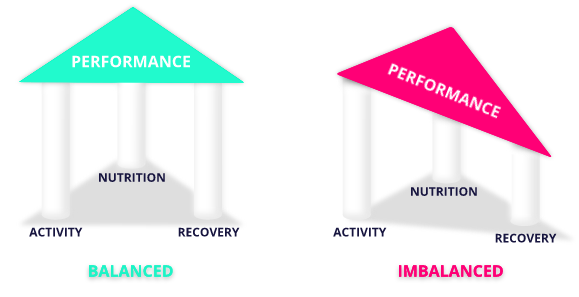

Optimizing performance through data
Our story
In order to perform as an athlete you need a balance between training, recovery and nutrition. If you work hard physically you need to give your body the right building blocks of nutrition and enough hours of recovery in order to gain something from the workout. Failing to find this balance will result in a break down of your body instead of a build up. Look at it as a table with three legs that represents, nutrition, sleep and activity and the tabletop is your performance. When all three legs are equal, the table is balanced and so is your performance. However, if one of the legs gets longer or shorter, the table will be inbalanced, everything you put on it will fall of. If your performance is unblanced, how will you then facilitate all the work you've put in?
As a high school athlete in Sweden, aiming towards becoming an elite athlete, 20-year old soccer goalkeeper Hilma Svalander struggled to find a tool that could help her keep track of these three foundational parts of her life. Excel was too tedious and all the apps or websites she found either just measured one of the three parameters, was to expensive or aimed towards teams. She therefore decided to design her own app. Her own athletic journal, balance meter and personal trainer. Exactly knowing the needs of a busy young athlete juggling studies, club teams, high school team and social life, she created an app suited for these needs. An app that quickly stores the athletes data and shows the balance between the three important factors for performance, recovery, nutrition and training.The result is STATERA.
Together with former professional handball player Per Malmqvist and developer David Johansson, Hilma has developed the app so that you as an athlete can optimise your performance through data. Giving you a tool, she wish she had when she started her path to becoming an elite athlete.
The Team
Hilma Svalander
Little Rock, AR / Borås, Sweden
David Johansson
Jönköping, Sweden
Per Malmqvist
Gothenburg, Sweden